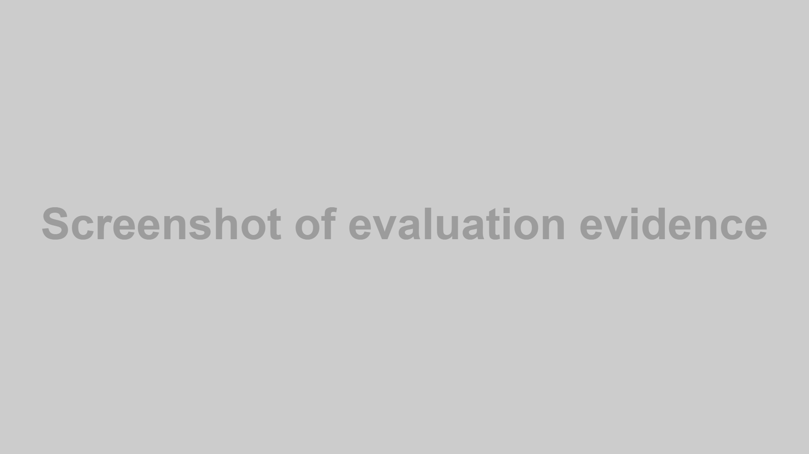

Evaluate your project as a whole, including each section prompts have been added at the end of each task. Summarise your previous evaluations or combine your work here.
How has your reflections impacted your projects development? E.g. did reflecting on your skills development lead you to improving a skill before completing your practical? Can this been seen in your work (.e.g. reflective diary)
Evaluate your skills and personal development during the project. What skills have you learned during this project? Where do you rate your current skills compared to industry standards? Consider subject specific skills and transferrable skills
